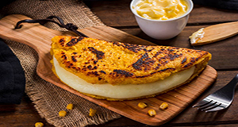

Cachapas
Contexto Histórico
La Cachapa é de origem indígena e é atribuída à região central da Venezuela. Os indígenas que povoavam a região de Miranda cultivavam o milho, cereal adorado pelos índios e Sconsiderado de origem divina, tão apreciado era o milho que seu culto era associado à religião cristã, os grãos de milho eram semeados. Dia de São. Isidro Labrador em homenagem aos agricultores. Esse costume ainda está vivo em algumas cidades agrícolas da Venezuela

Ingredientes:
2 latas de milho verde em conserva (ou o equivalente em milho fresco)
2 ovos
80 ml de creme de leite
2 colheres de sopa cheias de açúcar
1 pitada de sal
4 colheres de sopa de farinha
2 colheres de sopa de manteiga (ou margarina)
MODO DE PREPARO:
Junte todos os ingredientes e bata no liquidificador até ficar homogêneo.
Unte uma frigideira com óleo abundante e deixe esquentar bem.
Coloque uma porção de massa suficiente para formar um disco grosso (mais grosso que uma panqueca convencional).Deixe cozinhar em fogo baixo tampado até a superfície secar e começar a formar uma crosta fina.
Quando a parte de baixo estiver começando a torrar vire a cachapa e deixe tostar o outro lado.
Se feita em frigideira pequena faz 6 cachapas.
Está pronta, servir quente! Agora é só escolher o recheio de sua preferência e se deleitar.
Se a fizer bem grossa pode abri-la e rechear, mas fica muito bom (e mais fácil) se a fizer não tão grossa, colocar o recheio em cima e dobrar.
Não fica tão consistente como as feitas na Venezuela com a farinha de milho típica, mas fica muito semelhante e muito saborosa.
Recheios sugeridos: Fatias grossas de queijo branco ou Minas fresco, queijo com presunto, carne ou frango desfiados temperados ou o que mais gostar